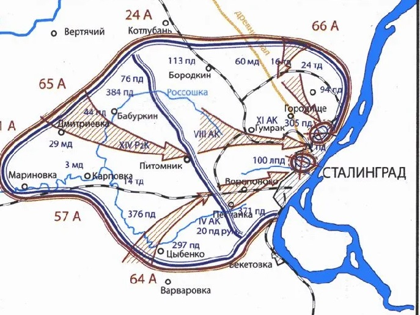

10-11 декабря 1942 года
Источник: Волгоградская правда от 10 декабря 1982 г.
ОТ СОВЕТСКОГО ИНФОРМБЮРО
Вечернее сообщение 10 декабря.
За 8 декабря под Сталинградом уничтожено не 24 транспортных самолета противника, как об этом сообщалось ранее, а 29 транспортных самолетов противника.
В заводском районе Сталинграда наши части, действуя мелкими группами, блокировали и разрушали дзоты и блиндажи противника. На южной окраине города наши подразделения ворвались в расположение вражеских окопов и продвинулись вперед. Немцы, пытаясь восстановить положение, предприняли несколько контратак. Наши бойцы отбили контратаки гитлеровцев и подбили 6 танков противника.
Вечернее сообщение 11 декабря.
Северо-западнее Сталинграда, на левом берегу реки Дон, наши части отражали контратаки противника и вели разведку его позиций. Бойцы под командованием тов. Чистякова отбили пять вражеских атак и отбросили немцев на исходные рубежи. Жители освобожденного от немецких оккупантов села Латошинка Сталинградской области составили акт о преступлениях гитлеровцев. В акте говорилось: «Немцы ограбили жителей села до нитки, отобрали у нас все продовольствие, одежду, в том числе валенки, полушубки и другие вещи. Немецкие солдаты и офицеры взрывали дома, брали все, что им попадалось на глаза. Гитлеровцы насильно угнали в тыл 95 жителей Латошинки…».
Событие. Разработка операции «Кольцо».
Еще 9 декабря Ставке Верховного Главнокомандования был представлен план ликвидации войск Ф. Паулюса, разработанный ее представителем А.М. Василевским совместно с руководством Донского и Сталинградского фронтов.
«Планом, - вспоминает А.М. Василевский, - предусматривалось расчленение и ликвидация окруженной группировки последовательно в три этапа: на первом этапе силами Донского фронта должны быть уничтожены четыре пехотные дивизии западнее реки Россошка; на втором этапе ударом Донского фронта, в основном 2-й гвардейской армией, в юго-восточном направлении на Воропоново и встречным ударом 64-Армии Сталинградского фронта через Песчанку также на Воропоново изолировать, а затем пленить вражеские войска в южной части окруженной группировки; наконец, на третьем этапе, ударом всех действовавших на внутреннем фронте армий Донского и Сталинградского фронтов, в общем направлении на Гумрак, окончательно сломить сопротивление и покончить с ними».
10 декабря на Донской фронт стали прибывать части 2-й гвардейской армии. Они разгружались в районе Арчеда, Иловля, Качалино и сразу направлялись в район сосредоточения - Вертячий, Песковатка.
«В начале Ставка Верховного Главнокомандования намечала использовать 2-ю гвардейскую армию в составе войск Юго-Западного фронта для развития наступления по плану операции «Сатурн» из района Калача в направлении Ростов-Таганрог. Однако задержка с ликвидацией окруженной группировки Ф. Паулюса и возникшая угроза попыток ее деблокады в связи с созданием на юго-восточном участке фронта группы армий «Дон» заставили пересмотреть первоначальные намерения. В сложившейся обстановке Ставка направила 2-ю гвардейскую армию в распоряжение командования Донского фронта.
11 декабря Ставка утвердила разработанный А.М. Василевским и командующими Донского и Сталинградского фронтов новый план операции по ликвидации окруженной группировки врага. В адресованной мне директиве, вспоминает А.М. Василевский, говорилось: «Товарищу Михайлову. Только лично.
1. Операцию кольцо провести двумя этапами.
2. Первый этап – выход в район Басаргино и Воропоново и ликвидация западной и южных групп противника.
3. Второй этап – общий штурм всех армий обоих фронтов для ликвидации основной массы вражеских войск к западу и северо-западу от Сталинграда.
4. Операцию первого этапа начать не позже того числа, которое установлено при телефонном разговоре между Васильевым и Михайловым.
5. Операцию первого этапа закончить не позже 23 декабря.
Следует отметить. Что Михайлов – псевдоним Василевского, Васильев – Сталина. Однако начать эту операцию в намеченные сроки не удалось. Помешал противник.
Карта
